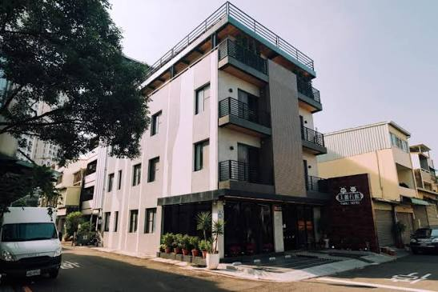
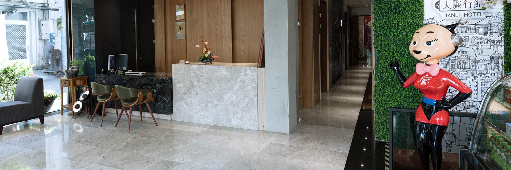
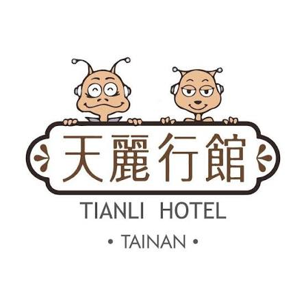
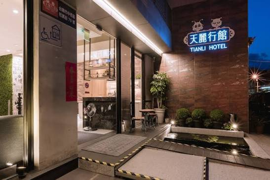

歡迎來到天麗行館。座落於台南市中西區和真街的巷弄之間，鬧中取靜， 鄰近海安路藝術街、藍晒圖文創園區、神農街與赤崁樓。我們提供簡約舒適的住宿空間、 每間客房皆備的座式浴缸，以及一份專屬於府城旅人的從容步調。 無論是商務出差或悠閒旅行，這裡都會是您在台南最溫暖的落腳處。




LOBBY · 大廳一隅
水磨石地板上，
水磨石地板上，
迎賓的老朋友
大理石接待櫃檯、溫潤的木作牆面，還有一整面綠植牆——這是天麗行館真實的大廳樣貌。 站在角落迎接每一位旅人的，是天麗行館的品牌吉祥公仔，也是許多住客拍照留念的角落。

天麗行館 · 品牌吉祥物


ROOMS · 房型細節
每一間房，都有各自的表情
提供二人至四人房型，每間客房均配有獨立衣櫃、熱水壺與私人衛浴，並設有座式浴缸； 部分房型附設陽台，讓晨光與巷弄的生活感一同醒來。


房型配置與坪數依實際房況略有不同，詳細價格與空房請電話或透過下方訂房通路查詢。
座式浴缸
每間客房皆設有座式浴缸，卸下一天的疲憊。
公共區域 WiFi
全館無線網路覆蓋，旅途中隨時保持連線。
附設停車場
館內備有停車空間，自駕遊府城更加從容。
行李寄放服務
提前抵達或延後退房，皆可代為妥善保管行李。
交誼廳與露台
提供旅人交流休憩的公共空間，放慢腳步片刻。
歐陸式早餐
招牌虱目魚粥喚醒府城的早晨，亦備有蔬食選項。
AROUND · 周邊景點
以和真街為起點，走進府城日常
步行可達
海安路藝術街 · 藍晒圖文創園區
步行約 17 分
赤崁樓
約 2 公里
台南孔廟
車程約 5 分
神農街
車程約 5 分
花園夜市 · 武聖夜市
短程可達
安平老街 · 安平古堡
VOICES · 旅人回饋
他們這樣說
巷弄裡的位置意外地安靜，晚上睡得特別好。
— 旅客常見回饋
房間有座式浴缸，出差奔波一整天後，泡個澡整個人都放鬆了。
— 旅客常見回饋
早餐的虱目魚粥，是對台南最溫暖的記憶之一。
— 旅客常見回饋
BOOKING · 訂房資訊
安排一次
安排一次
從容的府城之旅
歡迎透過電話、LINE 直接與我們聯繫，或透過合作訂房平台查詢即時空房與優惠。
- 地址
- 台南市中西區和真街79號
- 傳真
- 06-350-7959
- LINE
- @tianli